通约 · 设计归档
2026-11-13 · 首页候选保留；企业列表与企业详情标出最新版本。图片尚未转换为可运行组件。
设计说明 · 文件清单
企业详情 · 最新淡背景版
企业列表
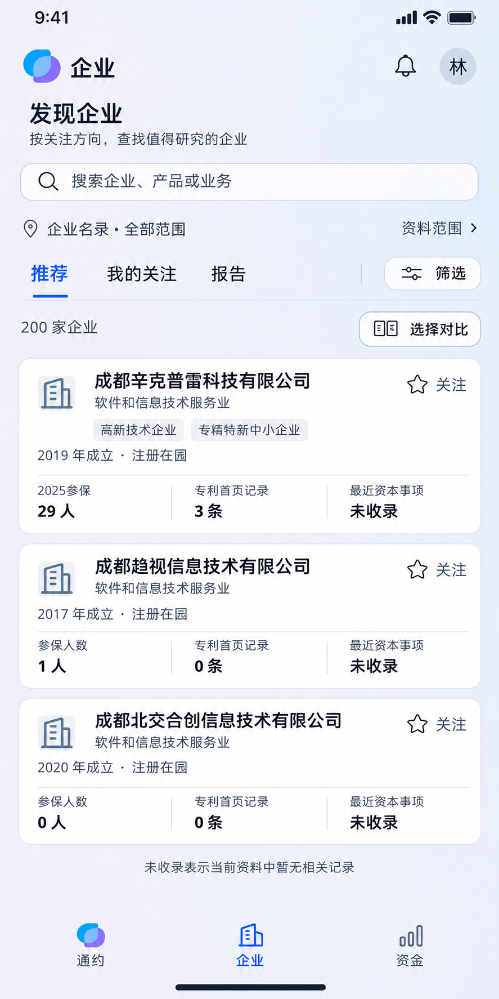
最新候选
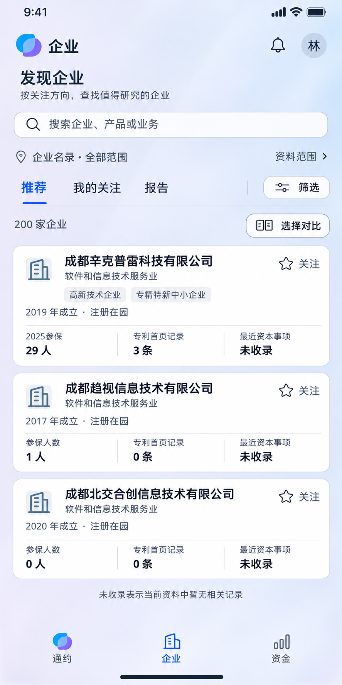
较强玻璃背景
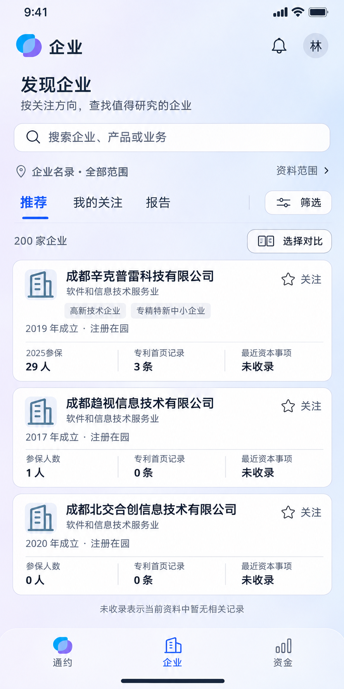
初版
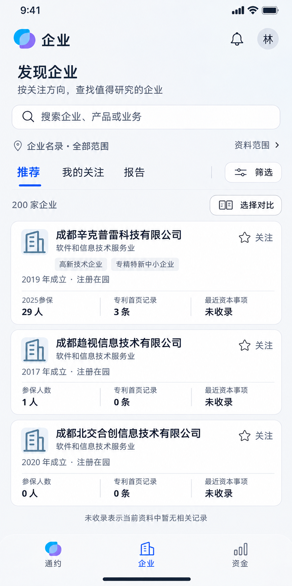
过淡版本 · 历史比较
首页 · 保留候选，尚未选择
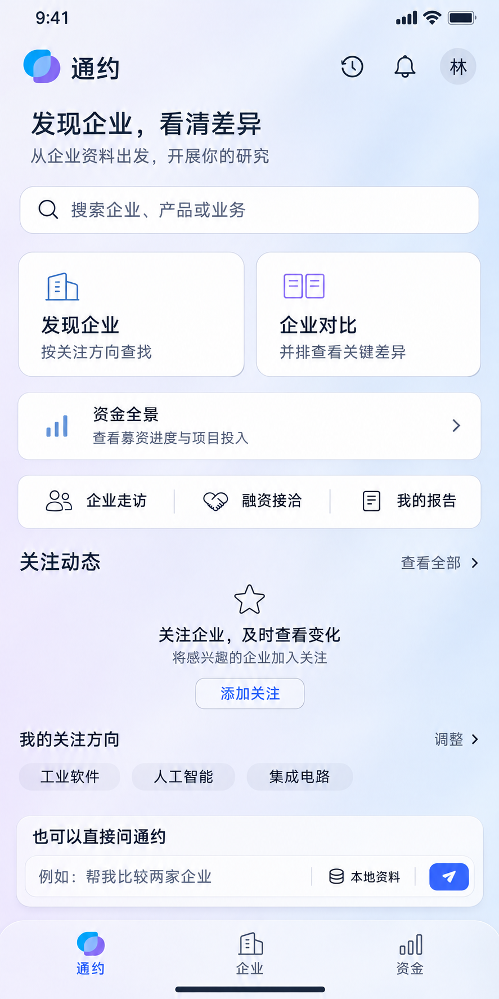
玻璃背景、白色前景卡片
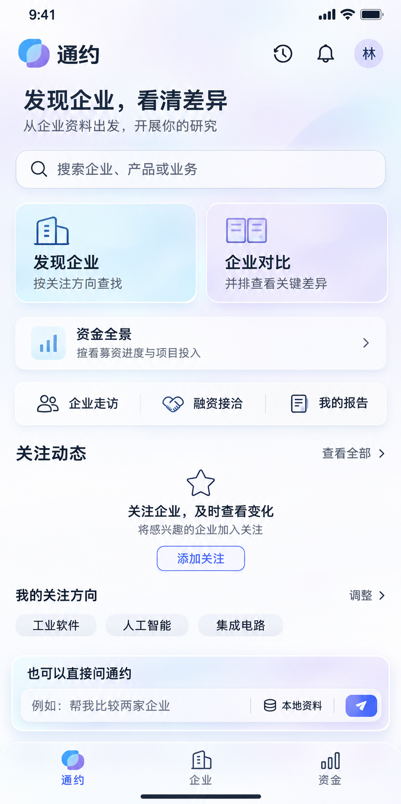
候选 01
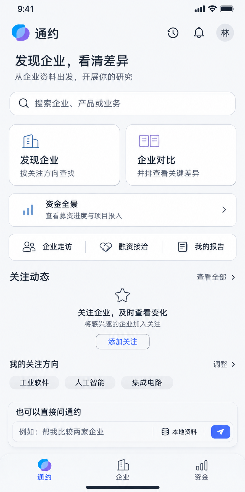
候选 02
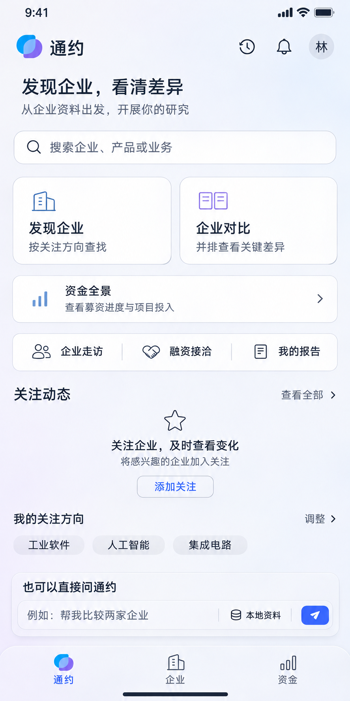
候选 03
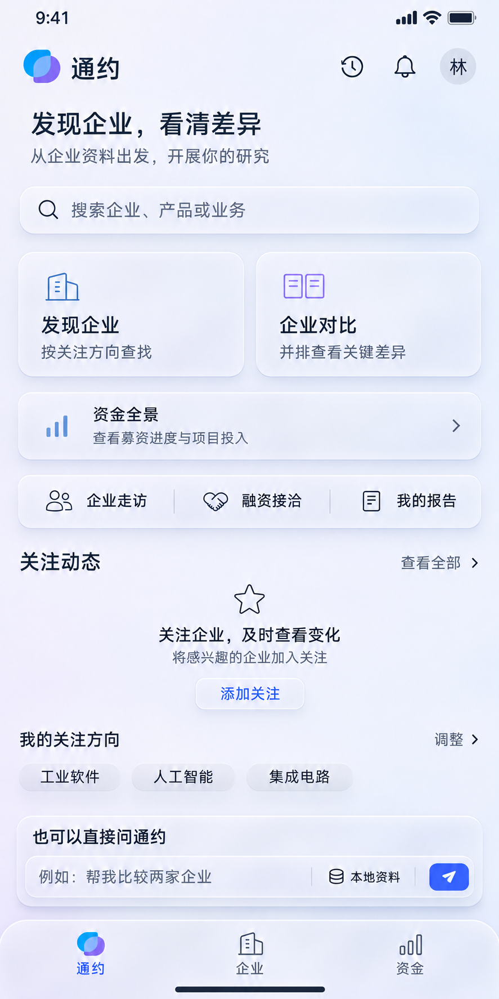
候选 04
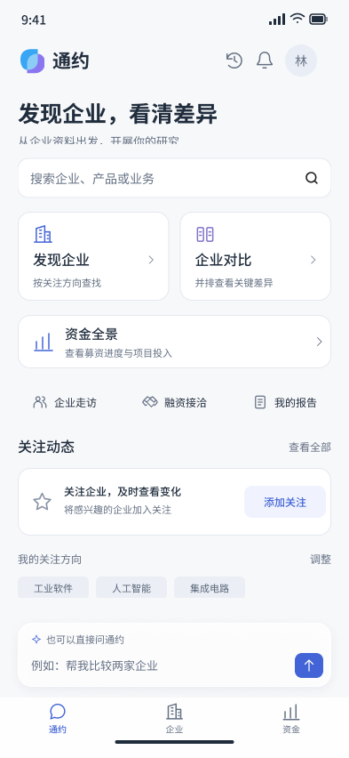
历史 Figma · v1
历史 Figma · v2
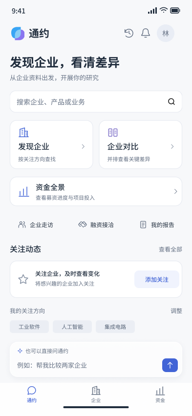
历史 Figma · 调整版（未定稿）
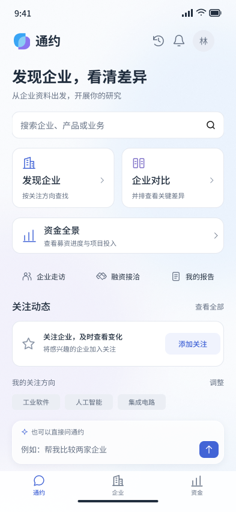
历史 Figma · 轻玻璃版